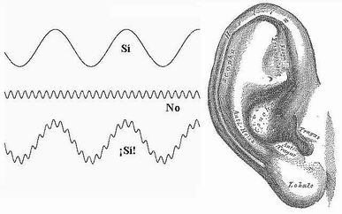

| inicio | | | | | @ | ||

Recovecos de las orejas
Sucumbo siempre al impulso de contarles irresponsables hipótesis carentes del más débil soporte y fundamento científico. Para quienes sufren igual trastorno, o peor, se condenan a la lectura de tales descabelladas especulaciones, y hasta se las creen, sirva esto que dije de suficiente advertencia.
Si los niños pasan más tiempo frente al televisor que con sus padres, ¿por qué hablan con la tonada y modismos de su familia y no adquieren en cambio el modo de hablar que más oyen? ¿Cómo es que copiamos, y sólo en broma, muy pocos vocablos del puertorriqueño en el que doblan las películas extranjeras a pesar de que vemos tantas, y usamos en cambio todas las palabras que nos enseñaron nuestros mayores? ¿A qué se debe qué cuando oímos voces o música a través de una ventana sepamos de inmediato si provienen de personas e instrumentos reales, o si sólo son reproducciones?
Cuando mis hijos e hijas eran pequeños y les lavaba las orejas, me maravillaba la cantidad de mugre que podían juntar. - ¿Por qué has hecho nuestras orejas, oh, Creador, tan ricas en anfractuosidades y recovecos difíciles de lavar? - clamaba, mientras los enjabonaba. - ¿No Entiendes, Omnisciente, que sólo oímos frecuencias hasta el pobre límite de veinte mil ciclos por segundo, u ondas de longitudes mayores de un centímetro y medio? ¿Para qué entonces estos magníficos laberintos acústicos, adaptadores de impedancia, cámaras de resonancia y reflectores de tamaño cinco veces menor, como si oyéramos hasta 100 MHz como lo hacen ratones y murciélagos? - La intrigada y curiosa mirada de los pequeños mientras los enjuagaba y secaba era la única respuesta; nada respondía lo Alto.
La ciencia hoy acepta que el oído humano es sensible a frecuencias de hasta sólo veinte mil ciclos por segundo. Los equipos de sonido de muy alta fidelidad cortan en ese límite, y hasta muy por debajo, o como una gran dádiva sus constructores se jactan de reproducir fielmente hasta el atrevido y supuestamente inaudible límite de veinticinco kilohercios. Y a pesar de eso, suenan a falso.
Los médicos juran que somos sordos a frecuencias mayores de 20 kHz, y una especialista creyó habérmelo demostrado cuando me puso unos auriculares y me pidió que apretase un botón cada vez que oía un sonido. Es cierto que no oímos tonos tan altos cuando son puros; pero estoy seguro de que sí los percibimos cuando se superponen a sonidos más graves; en eso consiste esta conjetura divagadora y disoluta: el oído juzga falso e incompleto el sonido de la TV, y no le hace entonces verdadero caso como a una voz real.
Lo mismo explica la emoción de un concierto o de un coro real que oímos en el teatro, cuya magia ultrasónica no pasa a través de la electrónica actual de altavoces y auriculares.
Cuando oímos un sonido grabado o transmitido nos damos cuenta enseguida de que no es real, porque es pobre en las frecuencias altas que comúnmente se juzgan inaudibles, y que tienen los sonidos verdaderos. Percibimos al instante la realidad de personas o instrumentos en vivo, y les hacemos más caso que a los medios electrónicos; por eso copiamos el habla familiar y no el de la TV.
Cuando esto se sepa se harán canales de sonido de tal amplitud de frecuencias que tendrán una influencia inédita en el público, y la TV nos hará hablar y creer lo que se le antoje.

| Publicado originalmente en http://www.elistas.net/lista/divagaciones/archivo/indice/21/msg/37/. Se permite su reproducción citando la fuente. Última actualización nov-2017. Buenos Aires, Argentina. |